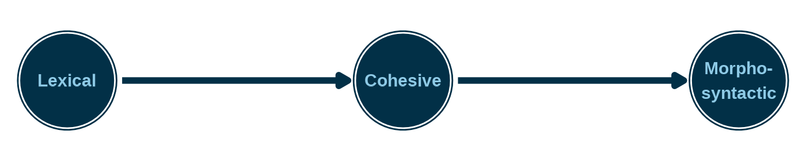
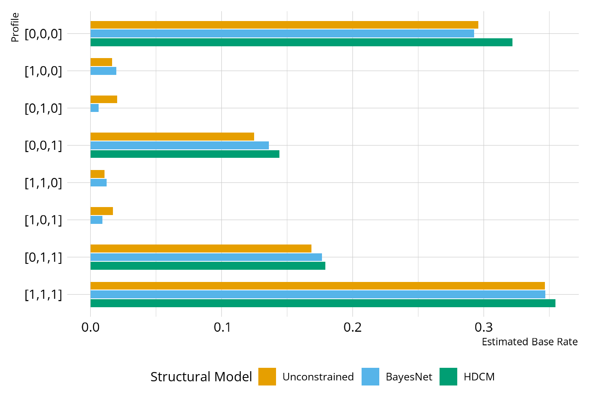

Define attribute relationships
Include information about how your attributes relate to and interact with each other.
Introduction
We’ve seen how to specify and estimate a model, and what it looks like when a model doesn’t perform well. One of the most productive places to start when something seems off is the structural model. The structural model controls the assumptions your DCM makes about how attributes relate to each other. By default, the unconstrained model makes no assumptions at all and every possible attribute profile is freely estimated. That flexibility is a virtue when you have no prior theory about attribute relationships. However, if there are profiles that are rarely observed, attempting to estimate the base rates and item parameters associated with those profiles can result in issues with model fit (Templin & Bradshaw, 2014; Wang & Lu, 2021). When the nature of the domain suggests that proficiency on one skill is required before another can develop, you can encode, and test, that theory directly in the model. In this article we’ll learn how to do exactly that with attribute hierarchies.
To use code in this article, you will need to install the following packages: cmdstanr, dcmdata, and measr.
Examination for the Certificate of Proficiency in English (ECPE) data
To demonstrate how to specify heirarhcies with measr, we’ll use the ECPE data. The ECPE data has been widely used in the DCM research literature, and was the inspiration used by Templin & Bradshaw (2014) for their development of the hierarchcial DCM. The ECPE data measures three attributes related to rules of the English language. In total, the data set contains responses to 28 items from 2,922 respondents.
ecpe_data
#> # A tibble: 2,922 × 29
#> resp_id E1 E2 E3 E4 E5 E6 E7 E8 E9 E10 E11
#> <int> <int> <int> <int> <int> <int> <int> <int> <int> <int> <int> <int>
#> 1 1 1 1 1 0 1 1 1 1 1 1 1
#> 2 2 1 1 1 1 1 1 1 1 1 1 1
#> 3 3 1 1 1 1 1 1 0 1 1 1 1
#> 4 4 1 1 1 1 1 1 1 1 1 1 1
#> 5 5 1 1 1 1 1 1 1 1 1 1 1
#> 6 6 1 1 1 1 1 1 1 1 1 1 1
#> 7 7 1 1 1 1 1 1 1 1 1 1 1
#> 8 8 0 1 1 1 1 1 0 1 1 1 0
#> 9 9 1 1 1 1 1 1 1 1 1 1 1
#> 10 10 1 1 1 1 0 0 1 1 1 1 1
#> # ℹ 2,912 more rows
#> # ℹ 17 more variables: E12 <int>, E13 <int>, E14 <int>, E15 <int>, E16 <int>,
#> # E17 <int>, E18 <int>, E19 <int>, E20 <int>, E21 <int>, E22 <int>,
#> # E23 <int>, E24 <int>, E25 <int>, E26 <int>, E27 <int>, E28 <int>In addition to the response data, we also have a Q-matrix defining which items measure each of the 3 attributes. These attributes represent knowledge of differnt rules of the English language:
- Lexical: vocabulary (e.g., word choices, idioms)
- Cohesive: connection (e.g., pronouns, conjunctions, transitions)
- Morphosyntactic: grammar (e.g., prefixes and suffixes, tense, verb conjugations)
ecpe_qmatrix
#> # A tibble: 28 × 4
#> item_id morphosyntactic cohesive lexical
#> <chr> <int> <int> <int>
#> 1 E1 1 1 0
#> 2 E2 0 1 0
#> 3 E3 1 0 1
#> 4 E4 0 0 1
#> 5 E5 0 0 1
#> 6 E6 0 0 1
#> 7 E7 1 0 1
#> 8 E8 0 1 0
#> 9 E9 0 0 1
#> 10 E10 1 0 0
#> # ℹ 18 more rowsFor more information on the data, see ?ecpe.
When attributes have order
Without any hierarchy, the number of possible attribute profiles grows exponentially with the number of attributes. With three attributes, there are 23 = 8 possible profiles that represent every combination of proficiency and non-proficiency across the three attributes.
| Profile ID | Morphosyntactic | Cohesive | Lexical |
|---|---|---|---|
| 1 | 0 | 0 | 0 |
| 2 | 1 | 0 | 0 |
| 3 | 0 | 1 | 0 |
| 4 | 0 | 0 | 1 |
| 5 | 1 | 1 | 0 |
| 6 | 1 | 0 | 1 |
| 7 | 0 | 1 | 1 |
| 8 | 1 | 1 | 1 |
Some of these profiles may be theoretically impossible given what we know about the domain. Consider a respondent who is proficient on morphosyntactic but not lexical skills. Under the theory that lexical skills are foundational, this profile shouldn’t exist. An individual cannot apply morphosyntactic skills without first being able to apply lexical skills.
A hierarchy lets us encode this constraint. The hierarchy reduces the eight unconstrained profiles down to four valid ones: [0,0,0], [0,0,1], [0,1,1] and [1,1,1]. Each valid profile represents a step along a developmental ladder, and no one skips a rung.
| Profile ID | Morphosyntactic | Cohesive | Lexical |
|---|---|---|---|
| 1 | 0 | 0 | 0 |
| 4 | 0 | 0 | 1 |
| 7 | 0 | 1 | 1 |
| 8 | 1 | 1 | 1 |
We can visualize this structure as a directed acyclic graph (DAG), where an arrow from attribute A to attribute B means that proficiency on A is required before proficiency on B.
Plot code
library(tidyverse)
library(dagitty)
library(ggdag)
#>
#> Attaching package: 'ggdag'
#> The following object is masked from 'package:stats':
#>
#> filter
dag <- dagitty("dag { Lexical -> Cohesive -> Morphosyntactic }")
coordinates(dag) <- list(
x = c(Lexical = 1, Cohesive = 2, Morphosyntactic = 3),
y = c(Lexical = 1, Cohesive = 1, Morphosyntactic = 1)
)
tidy_dagitty(dag) |>
mutate(across(
c(name, to),
~ str_replace(.x, "Morphosyntactic", "Morpho-\nsyntactic")
)) |>
ggplot(aes(x = x, y = y, xend = xend - 0.06, yend = yend)) +
geom_dag_node(color = msr_colors[2], size = 30) +
geom_dag_text(color = msr_colors[1], size = 4) +
geom_dag_edges(
aes(x = x + 0.06),
edge_color = msr_colors[2],
edge_width = 2,
arrow_directed = grid::arrow(length = grid::unit(7, "pt"), type = "closed")
) +
scale_y_continuous(expand = FALSE) +
theme_void() +
theme(plot.margin = margin(0, 0, 0, 0))
Hierarchies in structural models
Two structural models implement attribute hierarchies, and they differ in how strictly they enforce it.
The hierarchical DCM (HDCM; Templin & Bradshaw, 2014) is strict. Profiles that violate the hierarchy are excluded from the model entirely by fixing their base rates to zero. This is demonstrated in Table 2, where only profiles consistent with the proposed hierarchy are included. If a respondent’s true profile is theoretically impossible, the model cannot assign them to it. Instead, they will be assigned to the nearest valid profile.
The Bayesian network model (BayesNet; Hu & Templin, 2020) is softer. All profiles remain possible, but profiles that are inconsistent with the hierarchy are estimated to be less likely. Rather than fixing probabilities to zero, the BayesNet structural model uses the hierarchy to inform the prior distribution over profiles. A respondent whose responses look most consistent with an “impossible” profile will still be assigned a non-zero probability for that profile, but the model will push that probability down.
The choice between them depends on how much you trust your theory. If you’re confident the hierarchy is real and complete, HDCM gives you a parsimonious model that’s easy to interpret. If you want to test the hierarchy rather than assume it, BayesNet lets the data push back.
Specifying a hierarchical structural model
For measr, hierarchies are specified with a string that describes the attribute relationships using a DAG-like syntax. Attributes are connected using the -> operator. The -> defines parent-child relationships in the hierarchy string. Parent attributes are prerequisites for child attributes. That is, you must possess or be proficient on the parent before you can acquire the child.
For our ECPE hierarchy, we can define the attribute relationships as "lexical -> cohesive -> morphosyntactic". We could also write the two relationships separately: "lexical -> cohesive; cohesive -> morphosyntactic". For a simple linear hierarchy, a single chain is the most readable form. However, nonlinear hierarchies may require the relationships to be defined as multiple linear relationships that connect together in various ways. To see examples of different hierarchies and how to specify them using the DAG syntax, check out the attribute hierarchies vignette in the dcmstan package.
Our hierarchy string can then be passed to hdcm() or bayesnet() as the structural model in dcm_specify(). Both take a hierarchy argument where we can define the hierarchy using a DAG-like syntax.
dcm_specify(
qmatrix = ecpe_qmatrix,
identifier = "item_id",
measurement_model = lcdm(),
structural_model = hdcm(hierarchy = "lexical -> cohesive -> morphosyntactic")
)
#> A loglinear cognitive diagnostic model (LCDM) measuring 3 attributes
#> with 28 items.
#>
#> ℹ Attributes:
#> • "morphosyntactic" (13 items)
#> • "cohesive" (6 items)
#> • "lexical" (18 items)
#>
#> ℹ Attribute structure:
#> Hierarchical diagnostic classification model (HDCM),
#> with structure:
#> lexical -> cohesive -> morphosyntactic
#>
#> ℹ Prior distributions:
#> intercept ~ normal(0, 2)
#> maineffect ~ lognormal(0, 1)
#> interaction ~ normal(0, 2)
#> `Vc` ~ dirichlet(1, 1, 1)The hierarchy must be a directed acyclic graph. You cannot have a cycle where attribute A is a prerequisite for B, and then B is also a prerequisite for A. All of the attributes in the hierarchy must also match the attribute names in the qmatrix. If you specify a cyclical graph or use an unknown attribute name, you’ll receive an error.
# A cycle: lexical requires cohesive, cohesive requires lexical
dcm_specify(
qmatrix = ecpe_qmatrix,
identifier = "item_id",
measurement_model = lcdm(),
structural_model = hdcm("lexical -> cohesive -> lexical")
)
#> Error in `hdcm()`:
#> ! `hierarchy` must not be cyclical
# Incorrect attribute name: "lexical_rules" instead of "lexical"
dcm_specify(
qmatrix = ecpe_qmatrix,
identifier = "item_id",
measurement_model = lcdm(),
structural_model = hdcm("lexical_rules -> cohesive -> morphosyntactic")
)
#> Error in `dcm_specify()`:
#> ! `hdcm("lexical_rules -> cohesive -> morphosyntactic")` must
#> only include attributes in a hierarchy present in the Q-matrix
#> ℹ Extra attributes: "lexical_rules"Estimating hierarchical models
Once we create our DCM specification with the hierarchy, we can use that specification within dcm_estimate() just like we normally do. Here we’ll estimate both an HDCM and a BayesNet model using cmdstanr and the Pathfinder algorithm (Zhang et al., 2022).
ecpe_hdcm <- dcm_estimate(
dcm_specify(
qmatrix = ecpe_qmatrix,
identifier = "item_id",
measurement_model = lcdm(),
structural_model = hdcm("lexical -> cohesive -> morphosyntactic")
),
data = ecpe_data,
identifier = "resp_id",
method = "pathfinder",
backend = "cmdstanr",
file = here::here("start", "fits", "ecpe-lcdm-hdcm-cmds")
)
ecpe_bayesnet <- dcm_estimate(
dcm_specify(
qmatrix = ecpe_qmatrix,
identifier = "item_id",
measurement_model = lcdm(),
structural_model = bayesnet("lexical -> cohesive -> morphosyntactic")
),
data = ecpe_data,
identifier = "resp_id",
method = "pathfinder",
backend = "cmdstanr",
file = here::here("start", "fits", "epce-lcdm-bayesnet-cmds")
)If we look at the respondent proficiency estimates, we see that we still get a proficiency estimate for each student on each attribute ($attribute_probabilities), but in the class probabilities, we only see the classes that are allowed by the specification ($class_probabilities).
score(ecpe_hdcm)
#> $class_probabilities
#> # A tibble: 11,688 × 5
#> resp_id class probability `2.5%` `97.5%`
#> <chr> <chr> <dbl> <dbl> <dbl>
#> 1 1 [0,0,0] 0.00000803 0.00000664 0.00000951
#> 2 1 [0,0,1] 0.00168 0.00154 0.00198
#> 3 1 [0,1,1] 0.00260 0.00215 0.00302
#> 4 1 [1,1,1] 0.996 0.995 0.996
#> 5 2 [0,0,0] 0.00000645 0.00000444 0.00000869
#> 6 2 [0,0,1] 0.00498 0.00373 0.00554
#> 7 2 [0,1,1] 0.00259 0.00214 0.00300
#> 8 2 [1,1,1] 0.992 0.992 0.994
#> 9 3 [0,0,0] 0.00000597 0.00000439 0.00000777
#> 10 3 [0,0,1] 0.00276 0.00192 0.00374
#> # ℹ 11,678 more rows
#>
#> $attribute_probabilities
#> # A tibble: 8,766 × 5
#> resp_id attribute probability `2.5%` `97.5%`
#> <chr> <chr> <dbl> <dbl> <dbl>
#> 1 1 morphosyntactic 0.996 0.995 0.996
#> 2 1 cohesive 0.998 0.998 0.998
#> 3 1 lexical 1.000 1.000 1.000
#> 4 2 morphosyntactic 0.992 0.992 0.994
#> 5 2 cohesive 0.995 0.994 0.996
#> 6 2 lexical 1.000 1.000 1.000
#> 7 3 morphosyntactic 0.979 0.973 0.985
#> 8 3 cohesive 0.997 0.996 0.998
#> 9 3 lexical 1.000 1.000 1.000
#> 10 4 morphosyntactic 0.997 0.997 0.997
#> # ℹ 8,756 more rowsWe can also see how the choice of structural model impacts respondent estimates by examining the estimated model base rates. The base rates represent the proportion of respondents estimated to have each profile. For comparison purposes, let’s also estimate a model with an unconstrained structural model.
ecpe_lcdm <- dcm_estimate(
dcm_specify(
qmatrix = ecpe_qmatrix,
identifier = "item_id",
measurement_model = lcdm(),
structural_model = unconstrained()
),
data = ecpe_data,
identifier = "resp_id",
method = "pathfinder",
backend = "cmdstanr",
file = here::here("start", "fits", "ecpe-lcdm-uncst-cmds")
)In Figure 2, we see the difference between the HDCM and the BayesNet. In the HDCM, the base rate is 0 for any of the profiles that are inconsistent with the defined hierarchy (e.g., [0,1,0]), whereas the BayesNet has non-zero base rates for all profiles. However, notice that the base rate for the BayesNet is much lower for the inconsistent profiles than what is seen in the unconstrained model. So the BayesNet is pushing respondents toward the profiles that are consistent with our specified attribute relationships, but those profiles are not a strict requirement as with the HDCM.
Plot code
bind_rows(
mutate(measr_extract(ecpe_lcdm, "strc_param"), strc = "Unconstrained"),
mutate(measr_extract(ecpe_bayesnet, "strc_param"), strc = "BayesNet"),
mutate(measr_extract(ecpe_hdcm, "strc_param"), strc = "HDCM"),
) |>
select(strc, class, estimate) |>
mutate(
class = fct_inorder(class),
strc = factor(strc, levels = c("Unconstrained", "BayesNet", "HDCM")),
) |>
complete(strc, class, fill = list(estimate = posterior::rvar(0))) |>
ggplot(aes(x = E(estimate), y = fct_rev(class), fill = fct_rev(strc))) +
geom_col(
position = position_dodge2(preserve = "single"),
width = 0.7,
na.rm = TRUE
) +
scale_fill_okabeito(
order = c(3, 2, 1),
breaks = c("Unconstrained", "BayesNet", "HDCM")
) +
labs(y = "Profile", x = "Estimated Base Rate", fill = "Structural Model")
Evaluating hierarchical structures
To this point, we’ve focused on how to encode attribute relationships into our DCM specifications. However, in the DCM framework, these relationships are also testable hypotheses. Thompson & Nash (2022) demonstrated how we can evaluate a proposed attribute hierarchy using the model fit tools we learned about in the Evaluate Model Performance article.
Specifically, we can use relative fit comparisons to directly compare the models. As in our previous case study, we’ll use leave-one-out cross validation (LOO; Vehtari et al., 2017) for our model comparisons. The model with the highest expected log predictive density (ELPD) is listed first. A difference that is large relative to its standard error (roughly more than 2.5 times; Bengio & Brandvalet, 2004) provides strong evidence for preferring one model over another.
If the hierarchical models show comparable ELPD to the unconstrained model, the hierarchy is consistent with the data: the simpler, theoretically motivated model fits as well as the fully flexible one. This is the ideal outcome when you have good domain theory. The defined attribute relationships reduce model complexity without sacrificing predictive accuracy. If the unconstrained model dominates clearly, the attribute relationships may be too restrictive, and some theoretically “impossible” profiles may actually be present in the data.
As we would expect to see if our theory of a linear hierarchy is correct, unconstrained LCDM, BayesNet, and HDCM have similar ELPD values (difference within the standard error). Because all the model have approximately equal fit, we would probably prefer the HDCM, as that is the simplest of the three models.
loo_compare(ecpe_lcdm, ecpe_bayesnet, ecpe_hdcm)
#> elpd_diff se_diff
#> ecpe_bayesnet 0.0 0.0
#> ecpe_lcdm -0.3 6.3
#> ecpe_hdcm -6.3 8.6Wrapping up
Defining attribute relationships like hierarchies lets you incorporate domain theory directly into the structural model. Rather than leaving the model to estimate all possible profile base rates freely, you can encode what you know about the order in which skills develop. The HDCM enforces that order as a hard constraint; BayesNet encodes it as a prior that the data can weigh against. Comparing hierarchical models to an unconstrained baseline tells you whether your theory is consistent with the data.
The next article puts everything we’ve learned so far together in a complete Diagnostic Assessment Case Study from start to finish.
Session information
#> ─ Session info ─────────────────────────────────────────────────────
#> version R version 4.5.2 (2025-10-31)
#> language (EN)
#> date 2026-04-04
#> pandoc 3.9
#> quarto 1.9.24
#> Stan (rstan) 2.37.0
#> Stan (cmdstanr) 2.38.0
#>
#> ─ Packages ─────────────────────────────────────────────────────────
#> package version date (UTC) source
#> bridgesampling 1.2-1 2025-11-19 CRAN (R 4.5.2)
#> cmdstanr 0.9.0 2025-03-30 https://stan-dev.r-universe.dev (R 4.5.2)
#> dcmdata 0.2.0 2026-03-10 CRAN (R 4.5.2)
#> dcmstan 0.1.0 2025-11-24 CRAN (R 4.5.2)
#> dplyr 1.2.0 2026-02-03 CRAN (R 4.5.2)
#> forcats 1.0.1 2025-09-25 CRAN (R 4.5.0)
#> ggplot2 4.0.2 2026-02-03 CRAN (R 4.5.2)
#> loo 2.9.0.9000 2025-12-30 https://stan-dev.r-universe.dev (R 4.5.2)
#> lubridate 1.9.5 2026-02-04 CRAN (R 4.5.2)
#> measr 2.0.0.9000 2026-03-21 Github (r-dcm/measr@475bc50)
#> posterior 1.6.1.9000 2025-12-30 https://stan-dev.r-universe.dev (R 4.5.2)
#> purrr 1.2.1 2026-01-09 CRAN (R 4.5.2)
#> readr 2.2.0 2026-02-19 CRAN (R 4.5.2)
#> rlang 1.1.7 2026-01-09 CRAN (R 4.5.2)
#> rstan 2.36.0.9000 2025-09-26 https://stan-dev.r-universe.dev (R 4.5.1)
#> stringr 1.6.0 2025-11-04 CRAN (R 4.5.0)
#> tibble 3.3.1 2026-01-11 CRAN (R 4.5.2)
#> tidyr 1.3.2 2025-12-19 CRAN (R 4.5.2)
#>
#> ────────────────────────────────────────────────────────────────────